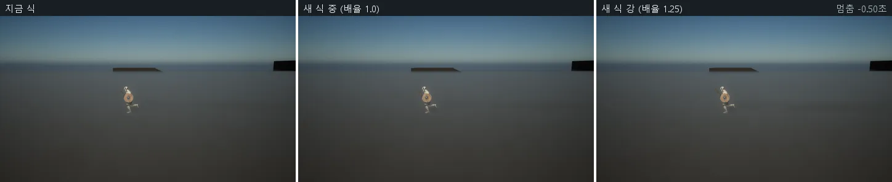
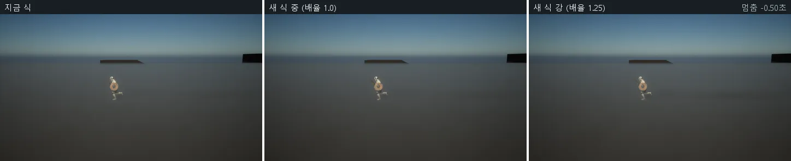
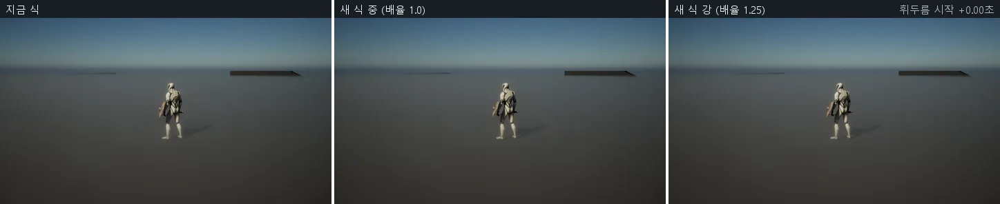
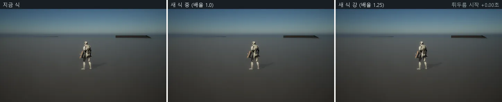
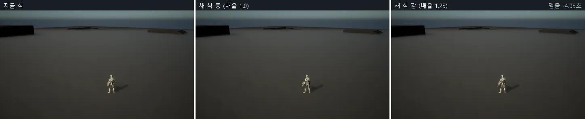
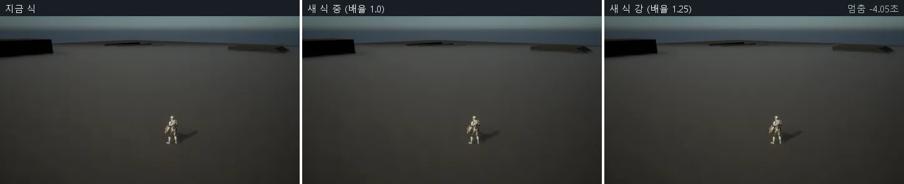

3D 안개 — 바람 섞기 지금 식과 새 식 비교 (독립 검증 전)
1. 무엇을 보시나요: 캐릭터가 안개 속을 움직일 때 몸과 칼이 안개에 바람을 넣는 방식을 고쳤습니다. 세 칸은 왼쪽부터 지금 식(승인하신 그대로), 새 식의 '중'(바람 배율 1.0), 새 식의 '강'(바람 배율 1.25)입니다. 위는 높은 품질, 아래는 낮은 품질입니다.
2. 왜 고쳤나요: 승인하신 그림에는 서 있는 동안의 끝없는 휘저음이 들어 있었습니다. 지금 식은 몸의 바람 세기 3.0 에서 바람을 너무 세게 섞어, 캐릭터가 멈춰 서 있어도 몸 주변 바람이 잦아들지 않고 매 순간 방향이 뒤집히며 안개를 계속 휘저었습니다. 걸을 때 남는 자국에도 이 휘저음이 섞여 있었습니다. 새 식은 바람이 목표를 지나치지 않게 섞어서, 멈추면 바람이 잦아들고 안개가 다시 가라앉습니다.
3. 함께 바뀌는 것: 새 식에서는 낮은 품질(초당 계산 횟수가 절반)에서도 높은 품질과 같은 빠르기로 바람이 따라옵니다. 지금 식에서는 낮은 품질이 더 느리게 따라왔습니다. 이 점은 원하시면 되돌릴 수 있습니다.
4. 보는 곳: (1) 걷다 멈춘 뒤 — 서 있는 동안 발밑 안개가 계속 움직이는지, 가라앉는지 (2) 칼을 휘두른 뒤 — 휘두름이 남긴 자국과 그 뒤의 움직임 (3) 걷다가 직각으로 꺾을 때 — 꺾는 자리의 자국.
걷다 멈춘 뒤 서 있기




칼 휘두른 뒤




걷다가 직각으로 꺾기




5. 여쭙는 것: ① 세 칸 가운데 어느 쪽이 보기 좋으신가요? ② 새 식을 고르신다면 '중'과 '강' 가운데 어느 쪽인가요? ③ 기본값을 새 식으로 바꿀까요? (지금 기본값은 지금 식 그대로입니다.)
6. 아직 하지 않은 것: 독립 검증이 끝나지 않은 그림입니다. 검증에서 문제가 나오면 그림을 바꿔 다시 올립니다.
7. 찍은 뒤 잰 것(감독 메모, 판정 아님): 찍은 원본 그림(1280×720)에서 캐릭터 둘레를 잘라, 0.1초 간격 장끼리 밝기가 얼마나 바뀌는지(0~255 단계의 평균)를 재 보았습니다.
- 멈춘 뒤(칼은 휘두름이 끝난 뒤) 1초가 지나면 세 칸의 움직임이 거의 같습니다. 지금 식과 새 식 '중'의 차이는 여섯 묶음 모두 0.003 단계 이하이고, '강'과의 차이도 0.04 단계 이하입니다. 남은 움직임(장마다 0.26~0.40 단계)은 세 칸에 똑같이 있습니다.
- 마지막 장끼리 견주면 지금 식과 '중'은 0.3~1.7 단계, 지금 식과 '강'은 0.7~2.9 단계 다릅니다. '강'의 자국이 조금 더 진한 정도입니다.
- 그래서 2번의 '끝없는 휘저음'과 3번의 '낮은 품질에서 더 느리게 따라옴'은 계산 속 바람에서는 사실이지만, 이 화면들에서는 거의 드러나지 않습니다. 휘저음이 걸음마다 방향을 뒤집는 떨림이라 안개를 제자리에서 앞뒤로 흔들 뿐 쌓이지 않기 때문으로 보입니다(추정, 확인하지 않음).
- 고르실 때 참고: 새 식 '중'은 화면이 지금과 거의 같고, 계산은 넘치지 않으며 품질 단계와 상관없이 같은 빠르기로 따라옵니다. '강'은 자국이 조금 진해집니다.
- 세 번째 장면은 오른쪽으로 꺾었습니다(등록 문서에는 '왼쪽' — 좌우만 바뀐 같은 동작). 그 장면의 정지 그림은 멈춘 뒤 0.45초·1.45초입니다.